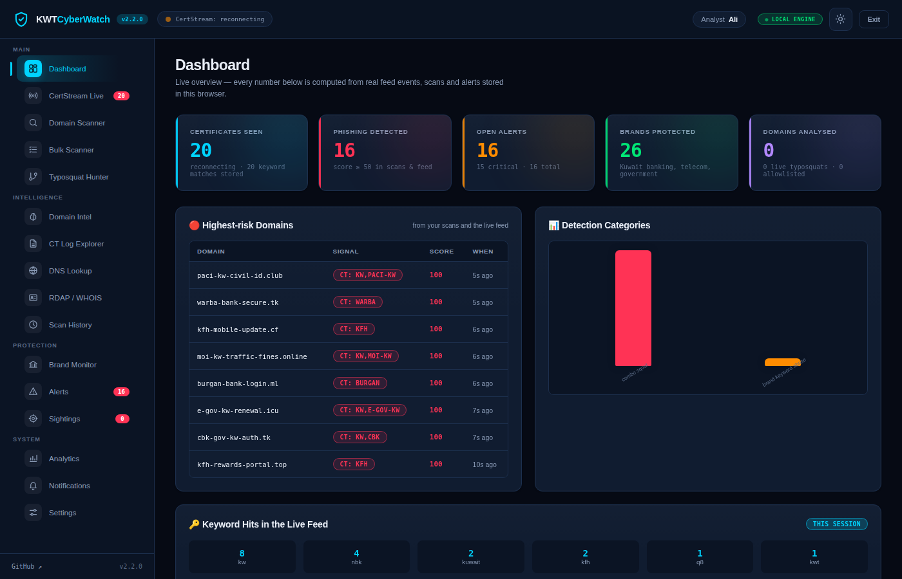
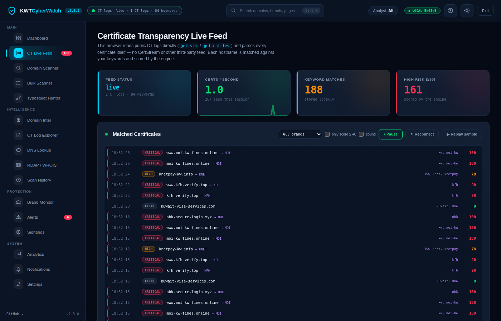
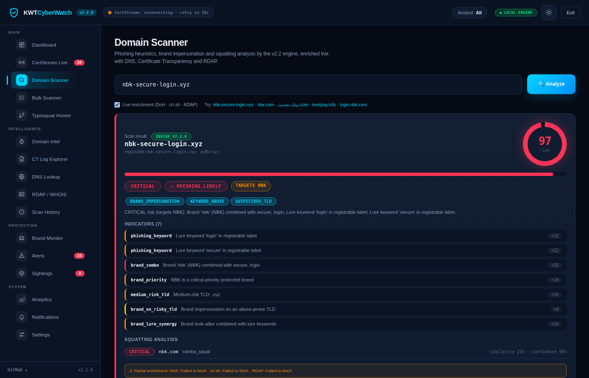
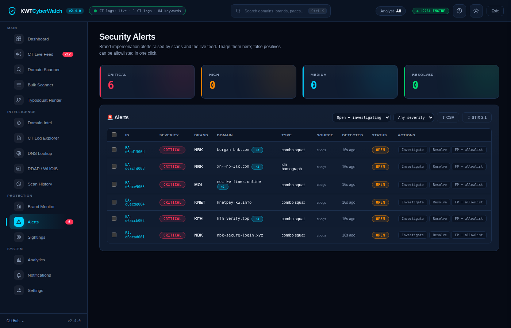
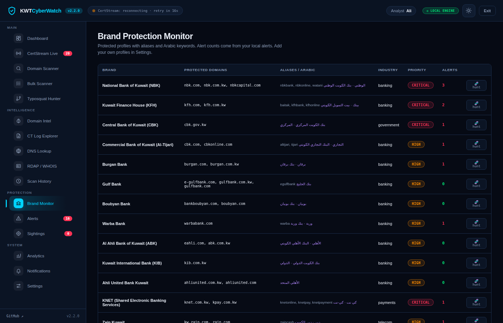

KWTCyberWatch watches Certificate Transparency logs the moment certificates are issued, hunts typosquats of Kuwaiti banks, telecoms and government services, and turns every look-alike into a triaged alert. No third-party feed. Nothing leaves your browser.

Every number in the console comes from real Certificate Transparency entries, real DNS answers and real registration data. The full detection engine is ported to JavaScript and parity-tested against the Python backend.
Reads RFC 6962 and Static CT API logs itself, parses every DER certificate with a built-in reader and scores each hostname as it is logged.
Generates typos, homoglyphs, leet, combo-squats and TLD swaps for any brand, resolves them over DNS-over-HTTPS and sweeps protected brands on a schedule.
Detects Cyrillic homoglyphs such as nbк.com, mixed scripts and Arabic lures like بيتك-تحديث, with a character inspector and a look-alike diff for every verdict.
Open → investigating → resolved / false positive, notes, assignee, timeline, bulk triage, one-click allowlisting, consolidated per domain.
Regular-expression rules with severity, tested inline and applied to every certificate and scan. Deep match runs the brand engine on every hostname, keyword or not.
DNS-over-HTTPS (Google, Cloudflare fallback), crt.sh certificate history, RDAP registration age and URLhaus reputation, fetched directly from the browser.
STIX 2.1 bundles, CSV, per-alert and weekly HTML reports, IOC copy, and a JSON backup of the whole workspace.
Command palette (Ctrl+K), deep links, keyboard shortcuts, light and dark themes, and a service worker so the console opens offline as a PWA.
Three sources feed one engine. Everything is computed locally, so the console behaves the same on GitHub Pages and on an air-gapped analyst laptop.
Certificates arrive from the CT logs you tail directly; look-alikes come from the Typosquat Hunter and the scheduled Watchtower sweep; anything else you paste into the scanner or the bulk scanner.
The engine parses the registrable domain, folds confusables and leetspeak, checks 26 Kuwaiti brand profiles and 84 keywords, scores lures, risky TLDs, entropy and hosting platforms, then applies your custom rules.
Alerts are enriched with DNS and registration age, consolidated per domain, and worked in a drawer with evidence, diff, notes and timeline. Export STIX or a report when you hand off.
Screens captured from the console while tailing a live Certificate Transparency log.




The browser console needs no server. For 24/7 monitoring, notifications to Slack, Teams, Telegram, e-mail or Syslog/CEF, and a REST API with OpenAPI docs, run the Python backend.
# clone and install git clone https://github.com/SiteQ8/KWTCyberWatch.git cd KWTCyberWatch && pip install -r requirements.txt # scan a domain python main.py scan nbk-secure-login.xyz # tail CT logs directly (no third party) python main.py monitor # proactive typosquat watcher + API + dashboard python main.py watch-squats python main.py api # http://localhost:5000 # or everything at once docker compose up -d
/api/v1/docsKWTCyberWatch produces automated heuristic findings from public data. A flagged domain is a candidate for review, not an accusation, and legitimate services will appear among the results. Verify independently before blocking, reporting or attributing. Brand names are used for identification only and remain the property of their owners. The software, site and published feed are provided as is, without warranty or liability. The console stores data only in your browser; this site sets no cookies and runs no analytics. Read the full disclaimer and terms of use.